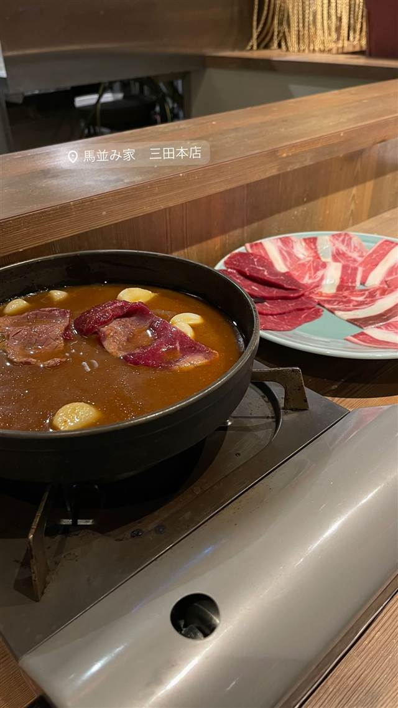

馬並み家 三田本店
青森産ブランド馬肉を刺身から鍋、寿司まで楽しめる
馬並み家 三田本店
2021年12月、ダイヤモンドダイニング系列の「馬肉料理 五嶋 田町店」を改装してオープンした馬肉専門店。青森県産ブランド馬肉を使い、刺身から鍋、寿司まで馬肉づくしのメニューが楽しめる。
TRIVIA
豆知識
- 馬肉は青森県のブランド肉を扱う「小田喜産業」から仕入れている
- 前身は同じDD系列の「馬肉料理 五嶋 田町店」で、改装してリブランドした店
REVIEWS
世間の評判
3.44食べログ
青森県産馬刺しと歌麿鍋
- 青森県産の新鮮な馬刺しの質を評価する声が多い
- 馬肉すき焼きの歌麿鍋を絶品と評価する声がある
- 学生街で店内ががやがやと騒がしいという指摘もある
食べログ
| 創業 | 2021年12月8日開業 |
|---|---|
| 系譜 | ダイヤモンドダイニング（DDホールディングス）グループの馬肉専門店チェーンの一店舗。同グループの「馬肉料理 五嶋 田町店」を改装してリブランドオープンした |
| 看板 | 桜鍋（馬肉の鍋料理） |
| こだわり | 青森県の小田喜産業から仕入れる国産ブランド馬肉を使い、刺身・鍋・焼き・寿司まで馬肉を食べ尽くせる構成 |
| どこから | 都心 |
| 営業時間 | 月〜金 17:00-23:30 土・日 15:00-23:00 |
| 予算 | 夜 ¥4,000～¥4,999 |
| 予約 | 予約可 |
| 場所 | 田町・三田 東京都港区芝浦(田町・三田駅徒歩3分) |
| メモ | 田町・三田駅から徒歩3分、B1F、47席 |
食べたもの：桜鍋